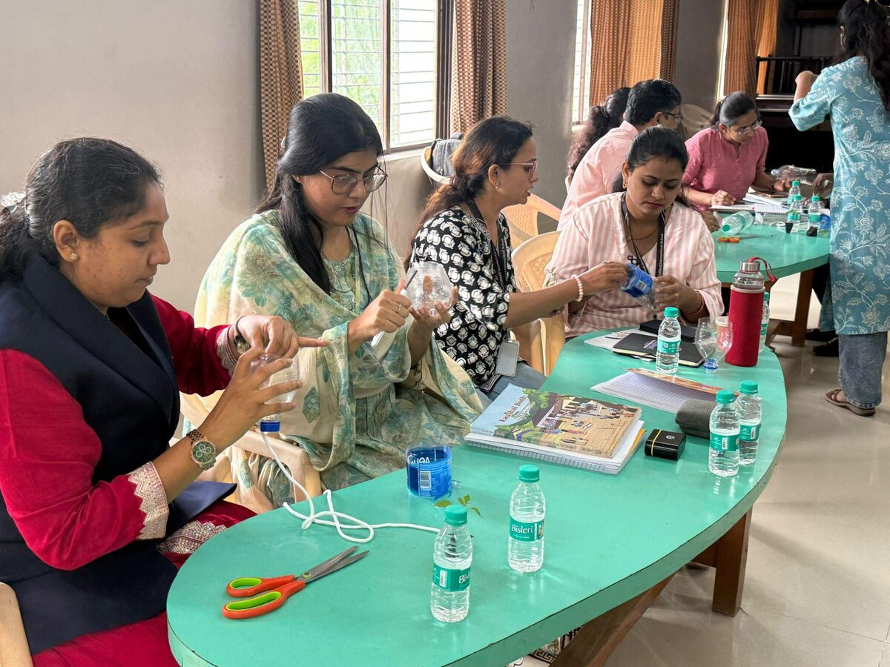
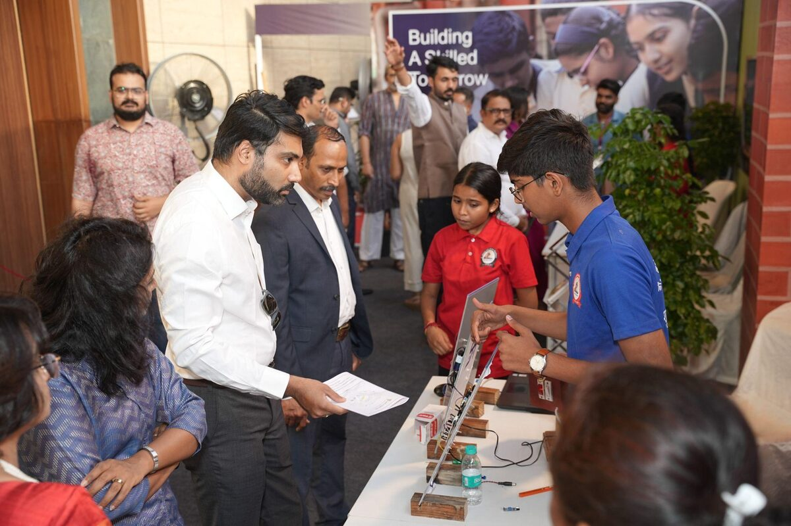

How to use this playbook
You don't need an audit to see whether your skill programme is built to last. In the first two articles of this series, we looked at why programmes stall in year two (Blog 1) and what the schools that persist do differently (Blog 2).
Getting this right matters because the benefit of applied learning comes when practical work is a steady part of school life across several years, not only the first one.
This playbook turns that into a working tool: a skill education implementation checklist for schools. It has seven questions. For each one you will find a picture of the ideal scenario, the warning signs, and a first step you can take this month.
Set aside ten minutes, ideally with your academic coordinator. Mark each question Yes, Partly or No, and be honest. The value is in the gaps, not the score.
The seven questions
1. Is the skill period protected in the master timetable?
The ideal scenario: The skill period is placed in the master timetable before other adjustments are made. The school has agreed what can displace it (for example, an examination) and what cannot (a rehearsal or substitution cover). Requests to borrow the period go to the principal or academic head, not to individual teachers.
Warning signs: The period is swapped for exam revision, rehearsals or substitution cover without a conversation. Students have missed several skill sessions in a row this term.
First step this month: Count how many scheduled skill periods were actually held last term. Share the number with your timetable in-charge and agree a short list of what may and may not displace the period.
Who owns it: Principal and timetable in-charge.
2. Could the programme continue if your most experienced skill teacher left tomorrow?
The ideal scenario: More than one teacher per skill area has been trained. A second teacher has taught at least one full session and could take over without starting from scratch.
Warning signs: One person holds all the knowledge, materials and student records. Nobody else has taken a class in the lab.
First step this month: Identify one more teacher per area and have them co-facilitate a session with your current lead.
Who owns it: Principal and academic coordinator.
3. Have your skill teachers had hands-on practice and ongoing support within the school, or only an introductory briefing?

Warning signs: Training was a single workshop or orientation. Lessons slide back to reading from a book or watching a demonstration.
First step this month: Set up a short, regular practice-and-feedback slot (for example, once a fortnight) where teachers prepare and review the next hands-on session together.
Who owns it: Academic coordinator, with the skill coordinator.
4. Does your annual budget include a recurring line for consumables, repairs and replacements?
The ideal scenario: The annual budget carries a recurring line for consumables, repairs and replacements. Someone is responsible for tracking stock, so a shortage is caught before a lesson, not during one.
Warning signs: The lab was funded as a one-time purchase. Activities are being shortened or turned into demonstrations because materials are missing.
First step this month: List what your skill activities use up each term and estimate the annual cost. Take it to your next budget discussion as a standing line, not a one-off request.
Who owns it: Principal and accounts or administration head.
5. Can someone name the person responsible for the programme, and do they have time to do it?
The ideal scenario: A named coordinator, with time set aside in their workload and the authority to act (for example, to request materials, adjust schedules and raise issues).
Warning signs: The coordinator exists in name only, with no allocated time. When something goes wrong, nobody is sure who should deal with it.
First step this month: Confirm the name in writing, agree how much time the role gets each week, and tell staff who it is.
Who owns it: Principal.
6. Is skill education reviewed in the same meetings and cycles as your other subjects?
The ideal scenario: Skill education appears on the agenda of regular academic review meetings. The coordinator can say what each class has covered and what students have produced.
Warning signs: Skill education only appears in the calendar at events and exhibitions. Problems come to light late.
First step this month: Add skill education as a standing item in one existing review meeting. Ask the coordinator for a two-minute update each time.
Who owns it: Academic head and skill coordinator.
7. Can you show parents and management what skill education is doing for students?

- Kaushal Melas and exhibitions where students explain how they made something and why, not just display it.
- Project showcases in assemblies, newsletters or parent meetings.
- Links to academics, where teachers can point to maths or science concepts students now understand better because of skill projects.
Short reflections at the end of each session give you the material for all three.
Warning signs: Impact shows up only once a year, at the exhibition. Parents still see skill education as time taken away from academics.
First step this month: Identify activities in skill education that can be integrated with maths and science. During review, ask the maths and science teachers to name one concept that a skill project strengthened, and share it at the next parent meeting alongside student work.
Who owns it: Principal and skill coordinator.
Reading your answers
Mostly Yes: Your programme has the foundations to last. The next question is depth, not survival. Look at how students explain their work, and how that thinking deepens from Class 6 to 10.
A mix of Yes and Partly: This is the most common picture. Pick the one or two "Partly" answers that carry the most risk, usually timetable or teacher continuity, and address those first.
Several No answers: This doesn't mean the programme has failed. It means it currently depends on individual effort rather than school systems, which is precisely when it is most likely to stall. The good news is that most of the first steps above are decisions, not purchases.
A simple sequence
If you are not sure where to begin, this order tends to work:
- This month: Protect the timetable (Q1), name the owner (Q5), and identify areas to integrate skill education with other subjects (Q7).
- This term: Train a second teacher and set up regular practice (Q2, Q3), and add skill education to a review meeting (Q6).
- Before next budget cycle: Add a recurring line for consumables, repairs and replacements (Q4).
How Lend A Hand India helps
The decisions in this playbook stay with the school. Where it helps to have a partner is in preparing your teachers, aligning curriculum across Classes 6–10 and planning the lab. Lend A Hand India supports schools in building skill education they can sustain on their own, through:
- Teacher training for Kaushal Bodh, Kaushal Vikas and other skill modules
- Composite Skill Lab setup, planning space, equipment and use together
- Exposure visits and learning programmes at the Karigar School of Applied Learning
- Skills on Wheels, our mobile skill lab
- Internships for school students
Talk it through
If you would like to talk through where your own programme stands.
Download: one-page checklist PDF